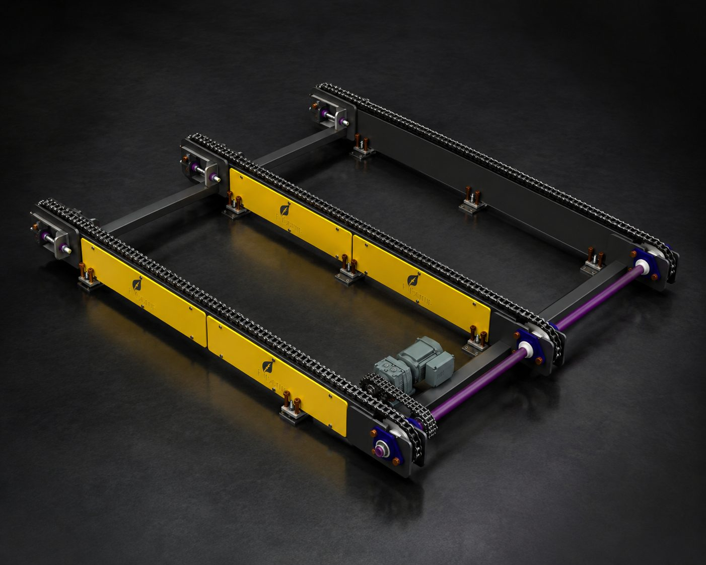
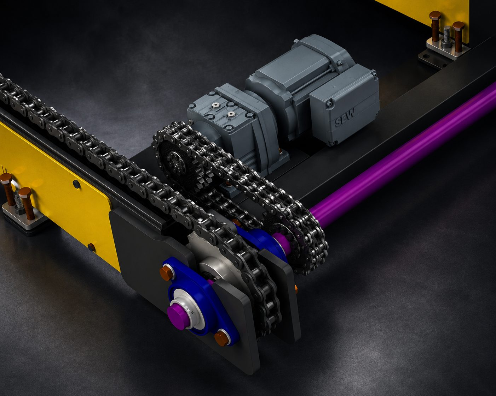
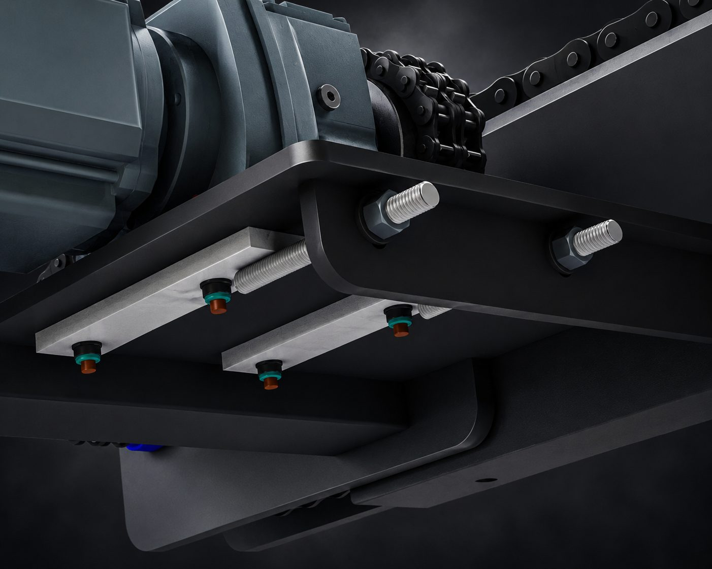
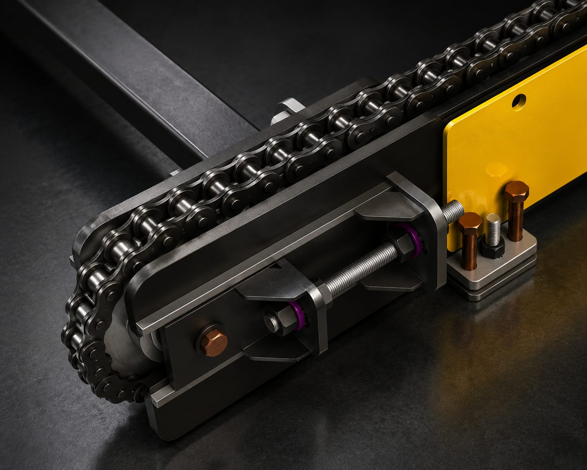

Manual Técnico Digital
ESTEIRA TRANSPORTADORA DE PACOTES — COD. FC.1001

1. Visão Geral do Equipamento
Esta é a vista isométrica do equipamento, mostrando a estrutura completa com as três correntes de arrasto paralelas, o motorredutor na extremidade de tração e o eixo tensionador na extremidade oposta. Todos os componentes trabalham em conjunto para movimentar os materiais de forma contínua e sincronizada.
Apresentação do Projeto
Esta documentação técnica digital abrange as diretrizes de instalação, operação, manutenção preventiva e segurança para a Esteira Transportadora de Pacotes (Código FC.1001). O equipamento foi projetado com foco na robustez, alta produtividade e segurança do operador, atendendo plenamente às legislações de segurança do trabalho.
Identificação do Equipamento
view_in_ar Vista 3D Interativa
Explore o equipamento em três dimensões: arraste para girar a câmera, scroll para aproximar/afastar e clique direito + arraste para deslocar a vista. Toque numa peça para selecioná-la e usar o botão Ocultar peça; se a peça desejada estiver atrás de outra, toque de novo no mesmo lugar para alternar para a peça interna. Quando quiser ver tudo de volta, use o botão Exibir ocultos. O modelo rotaciona automaticamente para facilitar a inspeção visual de todos os componentes.
Modelo 3D Interativo — Esteira FC.1001
settings Dimensões do Equipamento
Abaixo estão as dimensões gerais do equipamento.
| Parâmetro | Dimensão | Unidade |
|---|---|---|
| Largura do Equipamento | 2110 | mm |
| Comprimento do Equipamento | 2650 | mm |
| Peso do Equipamento | 490 | kg |
| Altura Ajustável | 280 a 360 | mm |
settings_input_component 1. Sistema de Tração
Esteira Transportadora de Pacotes — Código FC.1001
1.1 Descrição Geral

2. Sistema de Tração
O sistema de tração é responsável pela transmissão de torque e acionamento sincronizado das três correntes de arrasto, garantindo movimentação contínua, estável e eficiente dos materiais.
Em resumo: o motorredutor gera a força (torque), as engrenagens transmitem essa força ao eixo de tração, que movimenta as correntes por meio das engrenagens de corrente, e o eixo tensionador mantém tudo firme e no ritmo correto.
1.2 Motorização
O acionamento é realizado por:
- Motorredutor R37
- Potência: 1,5 CV
- Configuração: coaxial
Função: reduzir a rotação do motor e aumentar o torque, ou seja, transforma a rotação rápida do motor em movimento lento e forte, ideal para arrastar cargas com constância e sem esforço excessivo.
1.3 Acoplamento no Motorredutor

3. Tensionamento do Motorredutor
Procedimento de tensionamento da corrente de tração ASA 60: primeiro afrouxe os parafusos M8 do motorredutor (chave 13), liberando o ajuste; em seguida aperte a porca M12 da barra roscada de tensionamento inferior (chave 19), tensionando a corrente até eliminar a folga. Após o ajuste, reaperte os parafusos M8 do motorredutor.
Engrenagem 2.60.21 (Cod. FC.1001.014)
- Fixação: Chaveta + Sitlock
- Função: transmitir o torque do motorredutor ao eixo de tração com fixação rígida e sem folgas.
A chaveta trava a engrenagem ao eixo e o Sitlock elimina folgas e vibrações, garantindo que toda a força do motorredutor chegue ao eixo de tração sem perdas.
Como funciona o tensionamento: o acoplamento do motorredutor é montado com aperto controlado do Sitlock, que comprime a engrenagem contra o eixo. Isso impede qualquer giro em falso ou folga entre as peças, mantendo a transmissão de força firme e silenciosa durante toda a operação.
1.4 Eixo de Tração
Engrenagem 2.60.20 (Cod. FC.1001.013)
- Fixação: chaveta + sitlock
- Função: receber o torque do motorredutor e distribuí-lo ao sistema de correntes.
O eixo de tração funciona como o "coração" do sistema: ele gira as engrenagens de corrente montadas sobre ele, transmitindo o movimento a todas as correntes ao mesmo tempo.
1.5 Sistema de Correntes
- 3 correntes de arrasto paralelas
- Acionamento por: Engrenagens 1.100.20 (Cod. FC.1001.012)
Funcionamento: a rotação do eixo de tração aciona simultaneamente as correntes, promovendo o transporte dos materiais com distribuição uniforme de carga e sincronismo mecânico.
O uso de 3 correntes paralelas divide o peso dos materiais entre elas, aumentando a capacidade de carga e garantindo que o transporte seja estável e sem sobrecarga em um único ponto.
1.6 Eixo Tensionador

4. Eixo Tensionador
Cod. FC.1001.015
Função: ajustar a tensão das correntes, compensando desgaste e alongamento, evitando folgas, saltos e perda de sincronismo.
Com o uso, as correntes sofrem desgaste natural e alongamento. O eixo tensionador "empurra" as correntes para manter a tensão correta, evitando que elas saltem dentes das engrenagens ou batam na estrutura.
Como funciona: o eixo tensionador fica na extremidade oposta à tração. Através de fusos de regulagem, ele desliza o eixo para fora, aumentando a distância entre os centros das engrenagens. Isso estica as correntes, compensando o alongamento e garantindo que os dentes das engrenagens encaixem perfeitamente nos elos, sem folgas nem saltos.
Procedimento de tensionamento das correntes de arrasto ASA 100: o ajuste é feito através do aperto das barras roscadas M20, que tensionam as correntes. Aperte as barras de forma simétrica (um pouco de cada lado, alternando), até a corrente ficar firme sem folga, mas sem excesso de tensão. Chave utilizada: M20.
1.7 Fluxo de Funcionamento
- Motorredutor gera torque e reduz rotação
- Engrenagem (FC.1001.014) transmite o movimento
- Eixo de tração entra em rotação
- Engrenagens (FC.1001.012) acionam as correntes
- Correntes realizam o transporte
- Eixo tensionador mantém a tensão adequada
1.8 Características Técnicas
- Transmissão mecânica sem deslizamento
- Alto torque e robustez
- Sincronismo entre correntes
- Baixa manutenção
- Facilidade de montagem (chaveta + sitlock)
1.9 Manutenção
- Verificar tensionamento das correntes
- Inspecionar engrenagens e chavetas
- Conferir aperto dos Sitlocks
- Lubrificar conforme especificação
- Monitorar ruídos e vibrações
build_circle Componentes Principais
A esteira transportadora é composta por elementos modulares de alta performance para facilitar a substituição e manutenção preventiva.
Lista de Componentes
| Item | Componente | Quantidade | Aplicação | Orçamento Peças |
|---|---|---|---|---|
| 1 | Corrente ASA 100 | 17.100 mm | Corrente transportadora | shopping_cart Cotar |
| 2 | Corrente ASA 60 | 1.050 mm | Corrente tração | shopping_cart Cotar |
| 3 | Emenda corrente ASA 100 | 3 Und. | Corrente transportadora | shopping_cart Cotar |
| 4 | Emenda corrente ASA 60 | 1 Und. | Corrente tração | shopping_cart Cotar |
| 5 | Mancal FL209 | 6 Und. | Eixo de tração Ø45 | shopping_cart Cotar |
| 6 | Rolamento EX209 | 6 Und. | Mancal FL209 | shopping_cart Cotar |
| 7 | Rolamento 62008 DDU | 6 Und. | Cabeceira de esticador | shopping_cart Cotar |
| 8 | Anel Fix. Ø75 x Ø45 (Sit-Lock) | 4 Und. | Engrenagens tração | shopping_cart Cotar |
| 9 | Anel Fix. Ø50 x Ø25 (Sit-Lock) | 1 Und. | Engrenagem motoredutor | shopping_cart Cotar |
| 10 | Engrenagem 2.60.20 (Auge) | 1 Und. | Eixo tração | shopping_cart Cotar |
| 11 | Engrenagem 2.60.21 (Auge) | 1 Und. | Motorredutor tração | shopping_cart Cotar |
| 12 | Engrenagem 1.100.20 (Auge) | 6 Und. | Corrente transportadora | shopping_cart Cotar |
| 13 | Guia de polietileno de corrente ASA 100 | 6 Und. | Guia das correntes ASA 100 (2170 mm cada) | shopping_cart Cotar |
play_circle_outline Instruções de Operação
O fluxo de controle da esteira FC.1001 deve ser executado exclusivamente por operadores qualificados e treinados.
Procedimento de Partida
- Certifique-se de que a calha da esteira esteja livre de ferramentas, resíduos ou pacotes acumulados.
- Verifique se nenhum botão de Emergência está acionado.
- Ligue a chave seletora geral do painel elétrico.
- Pressione o botão Reset no painel de comando para energizar os contatores de segurança.
- Pressione o botão verde Liga (I). A esteira iniciará o movimento suavemente.
PARADA DE EMERGÊNCIA
O acionamento de qualquer botão de Emergência tipo cogumelo corta instantaneamente a alimentação do motoredutor. A esteira irá parar imediatamente por inércia estrutural. Use este recurso apenas em caso de risco físico ou falha crítica.
construction Planos de Manutenção
Abaixo estão estruturados os planos de manutenção mecânica e lubrificação recomendados para a esteira (conteúdo técnico do projeto FC.1001).
Tabela de Inspeção Preventiva
| Ação / Foco | Intervalo | Responsabilidade | Orçamento Peças |
|---|---|---|---|
| Inspeção visual das correntes (elos, pinos e folgas) | Diário | Operador | shopping_cart Cotar |
| Verificação de ruídos e vibrações anormais | Diário | Operador | - |
| Inspeção do tensionamento das correntes | Semanal | Manutenção | shopping_cart Cotar |
| Verificação de desgaste dos dentes das engrenagens | Mensal | Manutenção | shopping_cart Cotar |
| Conferência do aperto dos Sit-Locks e chavetas | Mensal | Manutenção | shopping_cart Cotar |
| Verificação de folga e aquecimento nos mancais FL209 | Mensal | Manutenção | shopping_cart Cotar |
| Verificação do nível de óleo do motorredutor | Mensal | Manutenção | - |
| Lubrificação das correntes de arrasto | A cada 200 h | Manutenção | - |
| Lubrificação dos mancais FL209 | A cada 500 h | Manutenção | - |
| Troca de óleo do motorredutor R37 | 500 h / 5.000 h | Manutenção | shopping_cart Cotar |
| Inspeção geral da estrutura e soldas | Semestral | Manutenção | - |
oil_barrel Lubrificação
Plano de lubrificação com cargas horárias e lubrificantes recomendados para cada ponto do equipamento.
| Componente | Lubrificante | Carga Horária | Observações |
|---|---|---|---|
| Correntes de arrasto (ASA 100) | Óleo lubrificante para correntes (aplicação em spray) | A cada 200 h | Aplicar sobre pinos e roletes das 3 correntes, máquina parada. |
| Corrente de tração (ASA 60) | Óleo lubrificante para correntes (aplicação em spray) | A cada 200 h | Mesma aplicação da corrente de arrasto. |
| Mancais FL209 | Graxa de lítio NLGI 2 com aditivo EP | A cada 500 h | 2 a 3 bombeadas com pistola de graxa em cada mancal. |
| Rolamentos 62008 DDU | Não lubrificar (rolamento vedado) | - | Lubrificação permanente de fábrica. Não abrir nem injetar graxa. |
| Engrenagens de tração (dentes) | Graxa para engrenagens abertas (com MoS2) | A cada 1.000 h | Aplicar com pincel sobre os dentes, máquina parada. |
| Motorredutor R37 | Óleo mineral ou sintético ISO VG 220 | 1ª troca 500 h, depois a cada 5.000 h | Verificar nível mensalmente. Trocar com o equipamento desligado. |
| Chavetas e Sit-Locks | Não lubrificar | - | Fixação seca. Usar apenas antigripante na montagem para evitar corrosão. |
ATENÇÃO
Antes de lubrificar qualquer ponto, desligue o equipamento e aplique o procedimento de bloqueio (LOTO). Nunca lubrifique com a máquina em movimento.
troubleshoot Diagnóstico de Falhas
Resolução rápida para os problemas operacionais mais comuns encontrados no sistema de transporte.
Causa Provável: 1. Botão de emergência pressionado; 2. Disjuntor-motor desarmado no painel; 3. Sem alimentação elétrica; 4. Sobrecarga travando o sistema de correntes.
Ação Corretiva: Girar e destravar os botões de emergência; verificar o estado dos disjuntores no painel de controle; testar a tensão trifásica de entrada; inspecionar se há material preso entre as correntes e a estrutura.
Causa Provável: 1. Tensionamento insuficiente das correntes (alongamento); 2. Dentes das engrenagens desgastados; 3. Corrente esticada de forma irregular (um lado mais tenso que o outro).
Ação Corretiva: Regular o eixo tensionador de forma simétrica até eliminar a folga; inspecionar o desgaste dos dentes das engrenagens 1.100.20; substituir engrenagens e/ou correntes danificadas.
Causa Provável: 1. Nível de óleo do motorredutor baixo ou óleo vencido; 2. Rolamento interno do redutor danificado; 3. Chaveta ou Sit-Lock solto; 4. Falta de lubrificação nas correntes e engrenagens.
Ação Corretiva: Verificar e completar o nível de óleo ISO VG 220; programar a troca de óleo; conferir o aperto das fixações; lubrificar correntes e dentes das engrenagens conforme o plano de lubrificação.
Causa Provável: 1. Eixo tensionador regulado incorretamente (desalinhamento angular); 2. Mancais FL209 com folga ou danificados; 3. Acúmulo de sujeira nas guias laterais; 4. Eixo de tração empenado.
Ação Corretiva: Regular os fusos tensionadores milimetricamente e de forma simétrica; verificar o aperto e estado dos mancais; limpar as guias; alinhar ou substituir o eixo se necessário.
Causa Provável: 1. Sobrecarga (material excessivo sobre as correntes); 2. Óleo em nível baixo ou contaminado; 3. Falta de ventilação ao redor do redutor; 4. Atrito excessivo por correntes mal tensionadas.
Ação Corretiva: Reduzir a carga; verificar nível e estado do óleo (troca a cada 5.000 h); garantir circulação de ar ao redor; ajustar o tensionamento das correntes.
Causa Provável: 1. Desgaste natural pelo uso; 2. Falta de lubrificação; 3. Choques por carga excessiva; 4. Tensão irregular das correntes.
Ação Corretiva: Parar o equipamento imediatamente (LOTO); substituir o elo ou trecho da corrente usando as emendas ASA 100/60; inspecionar todas as engrenagens e substituir as desgastadas; revisar o plano de lubrificação.
Causa Provável: 1. Mancais FL209 com folga ou desalinhados; 2. Sit-Lock das engrenagens afrouxado; 3. Eixo empenado por impacto; 4. Correntes com tensões diferentes entre si.
Ação Corretiva: Inspecionar e reapertar os mancais e Sit-Locks; verificar o alinhamento do eixo com relógio comparador; substituir eixo ou mancais danificados; balancear a tensão das 3 correntes.
verified_user Segurança Geral (NR-12)
O projeto da Esteira FC.1001 cumpre os requisitos da Norma Regulamentadora de Segurança em Máquinas e Equipamentos (NR-12).
BLOQUEIO ELÉTRICO E MECÂNICO (LOTO)
Antes de efetuar qualquer intervenção mecânica, limpeza ou lubrificação, é obrigatório desligar o disjuntor principal no painel e inserir o cadeado de bloqueio pessoal (Lockout / Tagout). Nunca realize trabalhos com a esteira em movimento ou energizada.
Manual digital da Esteira FC.1001 com identidade visual Engeprak.
Desenvolvido por KWC Industrial TECH.
Consulte este manual sempre que houver dúvidas operacionais.